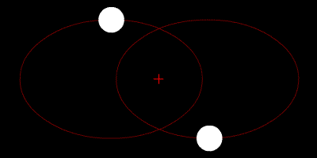

In this project, I will do an analysis on the classic N-body problem, up to three body. Including velocity magnitude, chaotic pattern, different orbit systems and equation of motion. This is a coding based project, so there won't be a lot of writing. Codes are all implement in python. If you need the code, please contact me. Since it is from computational physics course, SFU, if you need the code for your OWN course project, sorry I can only give instructions, I can't provide the code.
1:If the variable is bold, it means it is a vector.
2:If there is a [N] and N is a number, it means I get this information from N-th reference.
Newton's second law states:[2]
$$\mathbf{F} = m\frac{d\mathbf{v}}{dt}=m\frac{d^2\mathbf{r}}{dt^2}=m\mathbf{a}$$
Newton's law of universal gravitation states:[2]
$$\mathbf{F} = G\frac{m_{1}m_{2}}{r^2}\mathbf{\hat{r}}=G\frac{m_{1}m_{2}}{r^3}\mathbf{r}$$
Here is a figure for the two-body problem:[1]
Where:
R1,R2 are the position vectors of two objects.
m1,m2 are the mass of two object.
r12 is the position vector for m1 to m2.
By combining two equations: $$m\frac{d^2\mathbf{r}}{dt^2}=G\frac{m_{1}m_{2}}{r^3}\mathbf{r}$$
For two body problem(q is the mass ratio which is dimensionless): $$\frac{d^2{x}}{dt^2}=-\frac{1+q}{r^2}x$$ $$\frac{d^2{y}}{dt^2}=-\frac{1+q}{r^2}y$$
After break it down into two first ODE: $$m\frac{d\mathbf{v}}{dt}=G\frac{m_{1}m_{2}}{r^3}\mathbf{r}$$ $$\frac{d\mathbf{r}}{dt}=v$$
There is a point which is important to the system, the center of mass of the system, because COM is the point where the sum of the all the mass moments of the system is zero. If we can be at the center of mass of a orbit system, we can get a different view. Here are the equation of position COM and velocity COM:[6] $$\mathbf{r}_{com}=\frac{\sum_{i=1}^{n}m_{i}\mathbf{r}_{i}}{\sum_{i=1}^{n}m_{i}}$$ $$\mathbf{v}_{com}=\frac{\sum_{i=1}^{n}m_{i}\mathbf{v}_{i}}{\sum_{i=1}^{n}m_{i}}$$
For all the equation, if I am using the original value for all the variables, which almost all number are very huge, it may causes some problem such as slow convergence. However, there is a good method for rescale all the value in to non-dimension value. Such as ratio. It is called dimensionless. A lot of informations for astronomy is like N times of Msun.[4] For example: $$m^*=\frac{m_{object}}{m_{sun}}$$
By using this method, we can rewrite the equation to dimensionless form and take all other constant together to creat two new constants(including G), A and B:(v is the relative velocity, not object orbit speed)[6] $$A = \frac{GTM_{sun}}{r^2v}$$ $$B = \frac{vT}{r}$$
The odesolvers in scipy can only solve first order ODEs, so I have to do reduction of order. And two new ODE are: $$m_{1}\frac{d\mathbf{v_{1}}}{dt}=A\frac{m_{1}m_{2}}{r_{12}^3}\mathbf{r_{12}}$$ $$\frac{d\mathbf{r_{1}}}{dt}=B\mathbf{v_{1}}$$
Now, we can define a function for 2-body system[6]. One more thing, we need to use relative velocity between Earth and Sun in dimensionless method[4]. The circular path of average radius of earth-sun orbit is about 149598000000 m. By equation:[3]
There is an important parameter called "Basic reproduction number", which can be written as: $$speed = \frac{distance}{time}$$
The relative velocity of earth around the sun is rv = 29805.680986283987m/s
Sirius is a very famous star as known as "Dog Star". It is the brightest star is the night sky. In 1844, the German astronomer Friedrich Bessel found the motion of Sirius is "weird". After Bessel, in 1862, American astronomer Alvan Graham Clark discovered the stellar companion, which is Sirius B.[5] \ Sirius is a binary star system which contains two white stars orbiting each other with a separation about 20AU and a period of 50.1 years.[5] By using equations above, in normal 3-D Galilean space, this will happen:
If we stand at the center of mass point and move with the star system, this is what we will see:
The large mass star will have a smaller radius motion due to Newtonian gravitational force from smaller mass star. In reality, we will see the velocity is dramatically increased when two stars are getting close. Because of the distance between them is getting small. Then, because of the fast speed, two stars escape the gravity and go back to the normal orbit.[7] This is a binary star system with similiar mass. 
Pluto is the ninth planet from the Sun, and it is the farthest. In 1840, Urbain Le Verrier used Newtonian mechanics to predict the position of unknown planet, which pluto is in the list. In 1930, Pluto was discovered by Clyde Tombaugh.[8]
If we stand at the center of mass point and move with the star system, this is what we will see:
The mass of the Sun is so huge, it is large enough to keep the Sun almost stay the same. So there is a little change with the Sun's velocity due to the Pluto. If we look at the v vs t relation, we can see the speed magnitude of pluto is not constant, it is because the shape of the orbit is not a perfect circle. People studied about the shortest and farthest points of the orbit, which are called Aphelion and Perihelion.
Three-body problem is a very complex problem in astronomy. By computer, we can get approximate chaotic result with little error. But in space, if we want to predict what will happen after thousand years, the error will stack and the result will be inaccurate. I didn't find a good example of a three-body problem in real life. The moon, earth and Sun is not working with out other planets because the mass difference is so huge. In inelastic three-body system, the gravity will just throw the planet away. So I will create some datas for the three-body problem based on some special situations. Here are the nine equation which I get from Newtonian mechanics(Well, now you know why three-body is hard and chaotic): $$\frac{d^2{x_{1}}}{dt^2}=\frac{Gm_{2}}{r^3_{12}}(x_{2}-x_{1}) + \frac{Gm_{3}}{r^3_{13}}(x_{3}-x_{1})$$ $$\frac{d^2{y_{1}}}{dt^2}=\frac{Gm_{2}}{r^3_{12}}(y_{2}-y_{1}) + \frac{Gm_{3}}{r^3_{13}}(y_{3}-y_{1})$$ $$\frac{d^2{z_{1}}}{dt^2}=\frac{Gm_{2}}{r^3_{12}}(z_{2}-z_{1}) + \frac{Gm_{3}}{r^3_{13}}(z_{3}-z_{1})$$ $$\frac{d^2{x_{2}}}{dt^2}=-\frac{Gm_{1}}{r^3_{12}}(x_{2}-x_{1}) + \frac{Gm_{3}}{r^3_{23}}(x_{3}-x_{2})$$ $$\frac{d^2{y_{2}}}{dt^2}=-\frac{Gm_{1}}{r^3_{12}}(y_{2}-y_{1}) + \frac{Gm_{3}}{r^3_{23}}(y_{3}-y_{2})$$ $$\frac{d^2{z_{2}}}{dt^2}=-\frac{Gm_{1}}{r^3_{12}}(z_{2}-z_{1}) + \frac{Gm_{3}}{r^3_{23}}(z_{3}-z_{2})$$ $$\frac{d^2{x_{3}}}{dt^2}=-\frac{Gm_{1}}{r^3_{13}}(x_{3}-x_{1}) - \frac{Gm_{2}}{r^3_{23}}(x_{3}-x_{2})$$ $$\frac{d^2{y_{3}}}{dt^2}=-\frac{Gm_{1}}{r^3_{13}}(y_{3}-y_{1}) - \frac{Gm_{2}}{r^3_{23}}(y_{3}-y_{2})$$ $$\frac{d^2{z_{3}}}{dt^2}=-\frac{Gm_{1}}{r^3_{13}}(z_{3}-z_{1}) - \frac{Gm_{2}}{r^3_{23}}(z_{3}-z_{2})$$
Which can be see as a general approach of the problem, even it is very complex. So now we have two kinds of equations, one is using reduction of order ODE, another is second order ODE. There are a lot of possible numerical solutions for the problem, a lot of them are no pattern chaotic system. Like this one:
And this one, two of them form a binary system and the lonely one just pop off:
Some of the solution will be a bit stable like this(Sun, moon and earth are like this one):
The three-body problem seems very unstable. It is true for a chaotic system. We know there are nine second order ODE for this problem, so every tiny change of variable will cause a huge difference. \ There are some 'stable' solutions, why we care about 'stable'? Because the odeint error from nine ODE, after long simulation period, it will stack and cause a big error. However, some of these solution exist in our world.
Kepler-16A and B are binary stars just like a two-body system. But there is a Kepler-16AB, which is very tiny compare to A and B.[11] These three planets form a special three-body system. The binary stars at center and the other one orbits around the binary system. The mass of Kepler-16A is much larger than Kepler-16B, and Kepler-16AB is very tiny. \ Here is a simulation of three stars which are very similar to the Kepler system.
Looks like Sun, Moon and Earth right? The relationship between masses are very similiar:
N-body problem is still a unpredictable topic, every body will have force on each other bodies. From Newtonian mechanic, there are only two cases for two-body problems, one is planar orbit, and one is non-planar orbit. Planar orbit usually happens when there is no extrem difference between masses, so each object produces gravitational force to the other and create a double-spin. Vice versa, when one of the mass is extremely large, it will orbit a little or even almost stay at the position, the other orbits around it. For three-body problem, it always comes to chaotic system. It can still form some interesting pattern such as the triple spin and the solar system pattern. But it is very unpredictable and there is no accurate solution for the ODE. There are a lot of ways to get the equation of motion from it. Such as Lagrangian mechanic and Hamiltonian mechanic. We can use Hamiltonian formalism to do a reduction of order of the nine second order ODE. But hopefully, this information will provide an general idea for solving N-body problem.
The Newtonian mechanic is powerful, yes it is, but is it accurate? Is it correct? In November 1915, Albert Einstein presented his famous equations, the Einstein field equations, which form a new topic in physics called Einstein's general theory of relativity. This theory states that mass can bend the spacetime. The curvature of spacetime is related to the energy and momentum of matter/radiation are present(From Wiki). We can resimulate the system with this theory, maybe in the future. The solutions of field equation are very complex. If you are interested, see this wonderful article by Kei Yamada and Hideki Asada, from faculty of science and technology, Hirosaki university. Following image is a brief idea about general relativity from wiki.